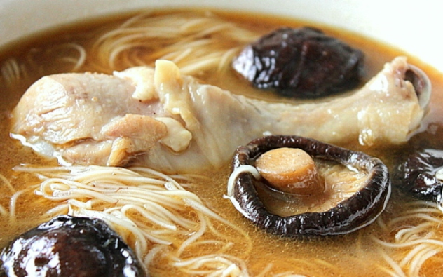
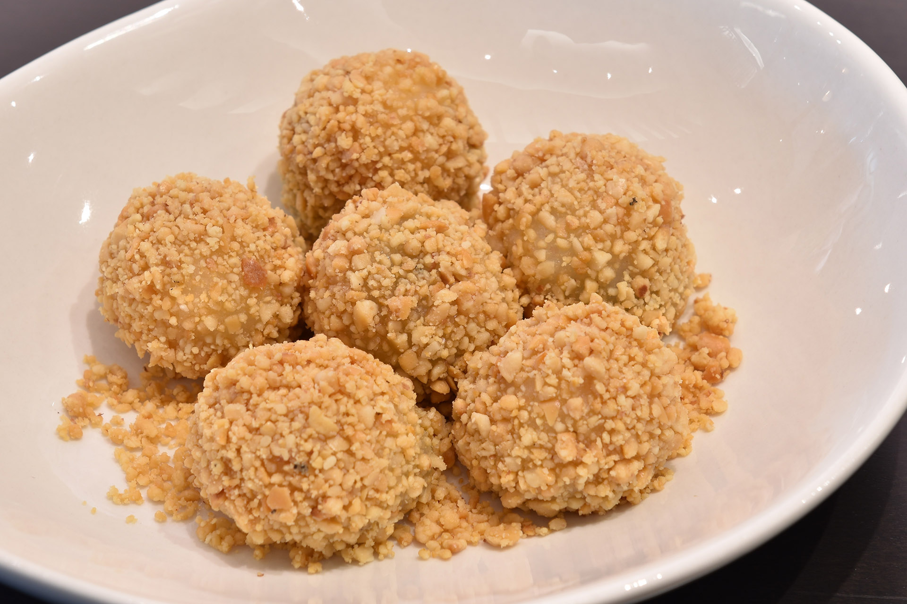
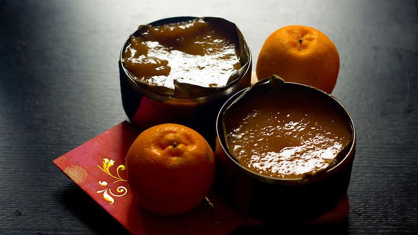

|
|
HOME FOOD DRESS WEAR |
|  |
| The ultimate comfort food: Chicken Soup. Not just your regular Chicken boiled with ginger and mushrooms, but with homemade Foochow Red Wine (红酒鸡汤面线). Sometimes even eat it dried. These dish regularly appear on dining table when some event such as Chinese New Year, new born baby, birthday event. Because of the noodles is long which called longevity nooldes(长寿面), Chinese people believe that eat the Mee Sua can lives longer as the Mee Sua is long. |
|  |
| The Lantern Festival is a traditional Chinese festival, and Tangyuan is the important food of that festival. Tāngyuán (汤圆)is a Chinese food made from glutinous rice flour. Glutinous rice flour is mixed with a small amount of water to form balls and is then cooked and served in boiling water or else deep-fried. Tangyuan can be either small or large, and filled or unfilled. They are traditionally eaten during Yuanxiao, or the Lantern Festival.For many Chinese families in mainland China as well as overseas, tangyuan is usually eaten together with family. The round shape of the balls and the bowls where they are served, come to symbolize the family togetherness. |
 |
| A mooncake (simplified Chinese: 月饼; traditional Chinese: 月餅) is a Chinese bakery product traditionally eaten during the Mid-Autumn Festival (中秋節). The festival is about lunar appreciation and Moon watching, and mooncakes are regarded as an indispensable delicacy. Mooncakes are offered between friends or on family gatherings while celebrating the festival. The Mid-Autumn Festival is one of the four most important Chinese festivals. |
|  |
| Nian gao, sometimes translated as year cake or New Year cake or Chinese New Year's cake, is a food prepared from glutinous rice flour and consumed in Chinese cuisine. It is also simply known as "rice cake". While it can be eaten all year round, traditionally it is most popular during the Chinese New Year. It is considered good luck to eat nian gao during this time of the year because nian gao is a homonym for "higher year" or "grow every year", which means "a more prosperous year". The character 年 is literally translated as "year", and the character 糕 is literally translated as "cake" and is identical in sound to the character 高, meaning "tall" or "high". Nian gao also has the exact homonym for "sticky cake"; the character 粘, meaning "sticky". |
 |
| Zongzi, Chinese: 粽子 is a traditional Chinese rice dish made of glutinous rice stuffed with different fillings and wrapped in bamboo leaves (generally of the species Indocalamus tessellatus), or sometimes with reed or other large flat leaves. They are cooked by steaming or boiling. In the Western world, they are also known as rice dumplings or sticky rice dumplings.Zongzi (sticky rice dumplings) are traditionally eaten during the Duanwu Festival(端午节) which falls on the fifth day of the fifth month of the Chinese lunar calendar, and commonly known as the "Dragon Boat Festival" in English. The festival falls each year on a day in late-May to mid-June in the Western calendar. |
© 2020 by Ling Siew Siew